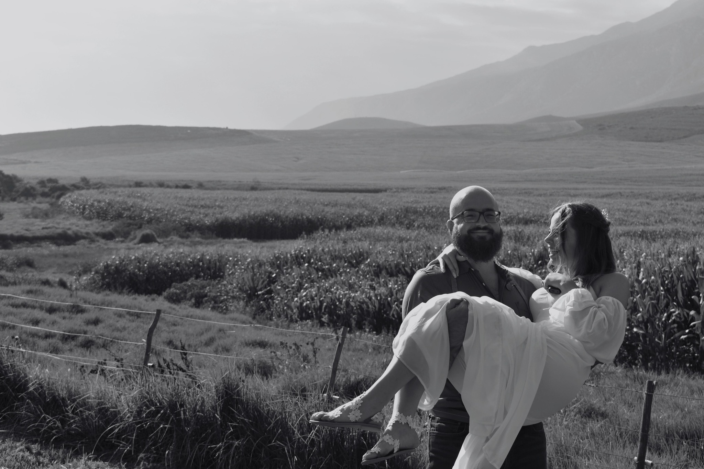

Koosieblitz Portofolio
My Resume aka Koosieblitz

Objective of this resume
- To create an online presence where I can track my growth and progress in:
- Becoming a efficient Full Stack Developer.
- Growing my Skill set by taking on new challenges.
- To ad value and skills to our Startup NJS-Digital.
Education
- Lichtenburg Highschool
2009 - 2011
Prefect, Hostel Head boy, Provincial colours in Track and field.
- UNISA
2019 – Current
Bachelor’s in business administration.
Key interests; Business management, Marketing and Financial management.
Chasing Honors in Communication and Marketing.
- TESOL (Teaching English to Foreign students)
Proficient in reading, writing, and implementing professional workplace communication.
Work experience
My linked In Profile
- Darling Brew (Festival setup/ Assistant Manager)
2012–2014
Stall setup at festivals, assistant manager tap room. Sales consultant and customer service liaison.
- Old Bridge Restaurant (Front of House Manager)
2014–2015
Customer service, digital marketing, event planning and staff admin. Sales targets reached bi-weekly.
- Workaway International (Front of house service duties)
2015-2017
Working in 2 different states Florida and New-Jersey at exclusive Golf Courses as a service assistant.
- Atlantic Skips (General Manager)
2017-2019
Family start up, built from ground up. Sold business in 2019 to competitor.
- Erinvale Country Club (Food and Beverage assistant)
2019–2020
Regular service duties.
- Eco Light Steel Construction (Site controller/Builder)
2014–2020 Temporary/ 2020-2022 Full time
Family business, I control admin procedures, marketing, and data capture. Main site supervisor and labor and materials controller.
Skills
- Microsoft office; Outlook, Excel, PowerPoint, and Word.
- Customer service, intent, and satisfaction.
- Leadership.
- Interpersonal relationship building.
- Digital Marketing/Social media management.
- Continuously adding new skills via LinkedIn learning.
- Client relationship building.
- Ownership of tasks.
- Problem solving.
- Keen interest in developing skills in Business processing and IT.
References
Darling Brew:
Theo (Regional manager): 072 141 7002
Old Bridge Bar and Restaurant:
Reference:
Jan Pretorius: 083 609 8919
Mirasol Country Club, Florida.
Reference:
Lionell Classen +561 776 4949
Atlantic Skips (General Manager)
2017-2019
Family start up, built from ground up. Sold business in 2019 to competitor.
Erinvale Country Club (Food and Beverage assistant)
2019–2020
Regular service duties.
Eco Light Steel Construction (Site controller/Builder)
2014–2020 Temporary/ 2020-2022 Full time
Family business, I control admin procedures, marketing, and data capture. Main site supervisor and labor and materials controller.
Baltusrol Country Club, New Jersey.
Reference:
Brian Baldwin +973 376 1900
Atlantic Skips.
Reference:
Heinrich Meyer +27 720 798 237
Erinvale Country Club.
Reference:
Duty Manager 021 847 1144
Eco Light Steel Construction.
Reference:
Completed Projects and portfolio available.
Karl Buckton 072 798 7726